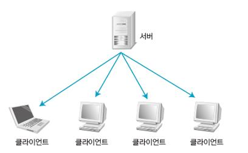

[강의정리] 데이터통신과네트워크 Overview
네트워크의 이해
네트워크의 사전적 의미
- 여러한 통신설비를 통해서 두대 이상의 컴퓨터를 서로 연결하는것
다수의 컴퓨터를 네트워크로 연결했을 때 얻을 수 있는 이점
- 데이터 공유가 용이함 (NAS)
- 주변장치 공유 (프린터)
- 눙률적인 통신 (메일)
근거리통신 (Local Area Network)
근거리 통신망 (LAN, Local Area Network)
- 한 건물이나 학교 내 캠퍼스처럼 비교적 가까운 지역에 한정된 통신망
광역통신 (Wide Area Network)
광역 통신망 (WAN)
- 두 개 이상의 근거리 네트워크가 넓은 지역에 걸쳐 연결되어 있는 것
- WAN은 하나의 국가 또는 국가와 국가 간을 연결하는 매우 범위가 넓은 네트워크
- 우리가 매일 사용하는 인터넷
통신방식
클라이언트/서버 시스템
- 다른 컴퓨터에 데이터 전송 서비스를 제공하는 컴퓨터를 ‘서버’라 하고, 서버에서 보내주는 데이터서비스를 수신하는 컴퓨터를 ‘클라이언트’라고 한다.

유니캐스트
- 네트워크에서 가장 많이 사용하는 방식
- 서버와 클라이언트 간의 일대일(1:1) 통신 방식
- 클라이언트의 IP주소와 MAC주소가 필요
브로드캐스트
로컬 LAN(라우터로 구분된 공간)에 있는 모든 네트워크 단말기에 데이터를 보내는 방식
서버와 클라이언트간에 일대모두(1:모두)로 통신하는 데이터 전송 서비스
브로드캐스트의 MAC주소는
FF-FF-FF-FF-FF-FF로 미리 정해져 있다.다른 라우터를 찾거나, 라우터끼리 데이터를 교환하거나, 서버가 서비스를 제공하려고 모든 클라이언트에게 알릴 때 등 여러 상황에서 사용
하지만 불특정 다수에게 전송되는 서비스라 수신을 원치않는 클라이언트도 수신하므로
네트워크 성능 저하를 가져올 수 있다.
멀티캐스트
- 브로드캐스트는 데이터를 무조건 CPU로 전송하기 때문에 컴퓨터 자체의 성능을 떨어뜨림
- 멀티캐스트는 전송하려는
특정 그룹에게만 한 번에 전송할 수 있기 때문에 유니캐스트처럼 반복해서 보낼 필요가 없고, 브로드캐스트처럼 전송받을 필요가 없는 컴퓨터에 보내지 않아도 됨
프로토콜 (Protocol)
프로토콜에 대한 이해
- 본래의 의미는 외교에서 의례 또는 의정서
- 톰 마릴이
컴퓨터와 컴퓨터 사이에서 메시지를 전달하는 과정이라 정의
프로토콜의 3가지 요소
- 구문(Syntax): 데이터의 구조나 포멧을 의미
- 의미(Semantics): 전송되는 데이터의 각 부분이 무엇을 뜻하는지를 알 수 있게 미리 정해둔 규칙
(데이터 자체뿐만 아니라 오류 제어, 동기 제어, 흐름 제어를 포함)
- 순서(Timing): 어떤 데이터를 보낼 것인지와 얼마나 빠르게 데이터를 보낼 것인지 정의
프로토콜의 기능
주소 설정(Addressing)
- 서로 다른 시스템의 두 개체가 통신을 하는경우 필요
순서 제어(Sequence Control)
- 프로토콜 데이터 단위를 전송할 때 보내는 순서를 명시하는 기능(연결 지향형 (Connection-Oriented)에서만 사용)
데이터 대열의 단편화 및 재조합(Fragmentation & Reassembly)
- 대용량 파일을 전송할 때 전송 효율이 높은 작은 단위로 나누어 전송한 뒤 전송 받은 시스템에서 이를 재조합 해야 함
- 어떻게 쪼갤건지, 재조합 할건지
캡슐화(Encapsulation)
- 데이터에 제어 정보를 추가
연결 제어(Connection Control)
- 연결 설정, 데이터 전송, 연결 해제에 대한 통제 수행
흐름 제어(Flow Control)
- 송신측 개체로부터 오는 데이터의 양이나 속도를 조절하는 기능
- 송신측과 수신측의 속도 차이 등으로 인한 정보 유실을 방지
오류 제어(Error Control)
- 두 개체에서 데이터를 교환할 때 오류가 발생할 경우, 이를 제어하는 기법
- 순서를 검사하거나 특정 시간 안에 받지 못하면 재전송을 요구하는 방식
동기화(Synchronization)
- 두 개체 간에 데이터를 전송할 때 각 개체는 특정 타이머 값이나 윈도우 크기 등을 통해 동시에 정의된 인자 값을 공유하는 것
다중화(Multiplexing)
- 통신 선로 하나에서 여러 시스템을 동시에 통신할 수 있는 기법
전송 서비스
- 우선순위 결정, 서비스 등급과 보안 요구 등을 제어하는 서비스
네트워크 계층 구조
네트워크 계층화에 대한 이해
- 1980년대 초 ISO(International Organization for Standardization)은 여러 업체가 만든 시스템에 대해 상호 연동이 가능한 표준 네트워크 모델을 제정할 필요성을 인식
- 1984년 OSI(Open System Interconnection) 네트워크 모델을 발표
OSI 7계층 모델
OSI 7계층
물리 계층: 1계층
- 실제 장치를 연결하는데 필요한 전기적, 물리적 세부 사항을 정의
- 물리 계층의 장치로는 허브나 리피터가 있음
데이터 링크 계층: 2계층
- 점대점(Point-to-Point) 사이의 신뢰성 있는 전송을 보장하기 위한 계층
- CRC 기반의 오류 제어와 흐름 제어가 필요
- 가장 잘 알려진 예는 이더넷
네트워크 계층: 3계층
- 여러 노드를 거칠 때마다 경로를 찾아주는 역할
- 라우팅, 흐름 제어, 단편화(Segmentation/Desegmentation), 오류 제어 등을 수행
- 대표적인 예는 라우터임, 또한 3계층에서 동작하는 스위치를 흔히 L3 스위치라 함.
전송 계층: 4계층
- 양 끝단 사용자들이 신뢰성 있는 데이터를 주고받을 수 있게 하여 상위 계층이 데이터 전달의 유효성이나 효율성을 고려하지 않아도 되게 해줌.
- 전송 계층에서 동작하는 프로토콜 중 TCP는 연결 지향(Connetion-Oriented) 프로토콜임
세션 계층: 5계층
- 양 끝단의 응용 프로세스가 통신을 관리하기 위한 방법을 제공
- TCP/IP 세션을 만들고 없애는 책임을 짐.
표현 계층: 6계층
- 시스템에서 사용되는 코드 간의 번역을 담당
- 표현 계층은 data의 Format(형식)을 정의함
응용 계층: 7계층
- 사용자나 응용 프로그램 사이에 데이터 교환을 가능하게 하는 계층
- HTTP, FTP, 터미널 서비스, 메일 프로그램, 디렉토리 서비스 등을 제공
TCP/IP 4계층
OSI 7계층 vs. TCP/IP 4계층
- OSI는 개념적인 모델 (실제 구현에서 반드시 지킨다고 볼 수 없음)
- TCP/IP 프로토콜은 OSI 모델보다 먼저 개발됨
- TCP/IP 프로토콜의 계층은 OSI 모델의 계층과 정확히 일치하지 않음
- 두 계층을 비교할 때, 세션(Session)과 표현(Presentation) 2개의 계층이 TCP/IP프로토콜 그룹에 없다는 것을 알 수 있음
- OSI 7 Layer는 장비 개발과 통신 자체를 어떻게 표준으로 잡을지 사용되는 반면에 실질적인 통신 자체는 주로 TCP/IP 프로토콜을 사용함
- 최근에는 TCP/IP 모델을 5계층으로 분류하기도 함
네트워크 계층 구조: 물리 계층
1계층: 물리 계층(Physical Layer)
두 시스템 간에 데이터를 전송하려고 링크를 활성화하고 관리하는 전기적 · 기계적 · 절차적 · 기능적 특성 등을 정의
OSI 참조 모델 7계층 중 물리 계층은 최하위 계층인 첫 번째 계층으로, 상위 계층에서 전송된 데이터를 물리매체를 통해 다른 시스템에 전기적 신호로 전송
LAN 카드, 케이블, 허브, 라우터 등 물리적인 것과 데이터 전송에 사용하는 전압 등 기본적인 것들이 물리계층에 속함.
송신 측: 데이터 링크 계층에서 0과 1로 구성된 비트열의 데이터(프레임)을 받아 전기적 신호로 변환한 후 전송매체를 통하여 수신측에 보냄
수신 측: 송신측에서 받은 전기 신호를 0과 1로 구성된 비트열로 복원, 수신측의 데이터 링크 계층에 전송
물리 계층 관련 장비
리피터(Repeater)
- 네트워클르 연장하기 위한 장비
- 불분명해진 신호 세기를 다시 증가시키는 역할
- 최근 리피터가 모든 네트워크 장비에 공통으로 들어가는 기능이 됨.
허브(Hub)
- 요즘 쓰이는 스위치의 예전 형태
- 허브는 스위치와 형태나 사용 방법이 같지만 패킷을 모든 곳에 똑같이 복사해서 보내는 것이 다름(스위치는 목적지에만 데이터를 전송)
네트워크 계층 구조: 데이터 링크 계층
2계층: 데이터 링크 계층(Data Link Layer)
- 물리적 링크를 이용하여 신뢰성 있는 데이터를 전송하는 계층
- 네트워크를 통해 데이터를 전송할 때 전송로 역할
- 데이터 링크 계층은 비트를 프레임이라는 논리적 단위로 구성
- 시스템 간에 오류 없이 데이터를 전송하려고 **네트워크 계층에서 받은 데이터 단위(패킷)를 프레임으로 구성하여 물리 계층으로 전송
- 데이터 링크 계층의 물리적인 주소: 랜카드나 네트워크 장비의 하드웨어 주소(MAC 주소)
- 네트워크 카드의 MAC 주소는 윈도우 명령 창에서 ‘ipconfig /all’ 명령을 실행하면 ‘Physical Address’ 에서 확인 가능
- 리눅스 Machine의 경우 ifconfig 명령어
MAC 주소
- 총 12개의 16진수로 구성
- 앞쪽 6개는 네트워크 카드를 만든 회사(OUI: Organizationally Unique Identifier)를 뜻하고, 뒤쪽 6개는 호스트 식별자(Host Identifier)로 각 회사에서 임의로 붙이는 일종의 시리얼
- 같은 MAC 주소는 존재하지 않음
데이터 링크 계층 프로토콜: 이더넷
- 제록스의 PARC(Palo Alto Research Center)에서 1970년대에 개발한 데이터 링크 계층의 프로토콜
CSMA/CD (Carrier Sense Multiple Access/Collision Detection)
- 이더넷의 통신 방식
- 이더넷 환경에서 통신을 하고 싶을 때, Carrier Sense를 수행함
- 복수개의 디바이스가 동시에 통신을 시작할 때, Collision이 발생하고 이를 Detection 할 수 있음
- Collision Detection이 일어난 후, 랜덤한 시간을 기다리고 다시 데이터를 보냄
데이터 링크 계층 장비
브리지(Bridge)
- 랜(LAN)과 랜(LAN)을 연결하는 초기의 네트워크 장치
- 데이터 링크 계층에서 통신 선로를 따라서 한 네트워크에서 그 다음 네트워크로 데이터 프레임을 복사하는 역할
스위치
- 기본적으로 데이터 링크 계층에서 작동하는 스위치를 뜻함 (L2 스위치)
- 허브의 단점이 Collision Domain의 확대를 해결
- L2 스위치는 연결된 시스템이 늘어날수록 패킷 간 충돌 때문에 매우 낮은 속도로 동작하는 더미 허브의 문제점을 해결하는 획기적인 방안
- 과거에는 브릿지를 통해서 Collision Domain을 나누었지만, 현재는 스위치가 인기가 많음.
스위치의 MAC 주소 테이블
- 시스템 간의 원활한 통신을 위해 주소 테이블을 생성하고 관리하는 역할
3계층: 네트워크 계층(Network Layer)
- 랜(LAN)을 벗어난 통신을 하기 위해 네트워크 계층에서 IP 주소를 사용
- 라우팅 프로토콜을 사용하여 최적의 경로를 선택
- 네트워크 계층은 데이터를 패킷 단위로 분할하여 전송한 후 재결합함